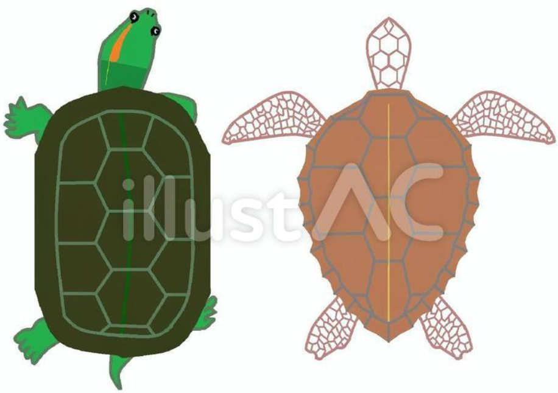

TODAY 28 | TOTAL 202130

안녕하세요 저는 느림보입니다
저는 대학생이고요
코로나 핑계로 그냥 집에서 보내는 시간이 많아요
잠도 많이 자고 거의 밤낮이 바뀌어 버렸어요
잘 때 의외로 예민하답니다.
느림보 (♀)
더 알아보기
느림보થ 추억상ㅈr.. ऀืົཽ≀ ͔ ͕̮ ऀืົཽ✧
https://url주소/나중에입력
거북이의 특징

거북(문화어: 거부기)은 거북목에 속하는 파충류를 일컫는다.
시각이 발달되어 있고 후각도 예민하지만 청각은 둔하다.
먹이는 잡식성으로 수생종은 물고기·갑각류·곤충 등의 동물성, 육생종은 새싹·과일 등 식물성이 주식이다.
습도와 온도의 영향을 받으며 1～3개월이 지나면 부화한다.
모두 난생(卵生)으로 수생종 및 해생종은 수중에서 교미하며, 산란은 육지에서 행한다.
거북이의 구조
거북이의 몸 속 구조는 이러하다.